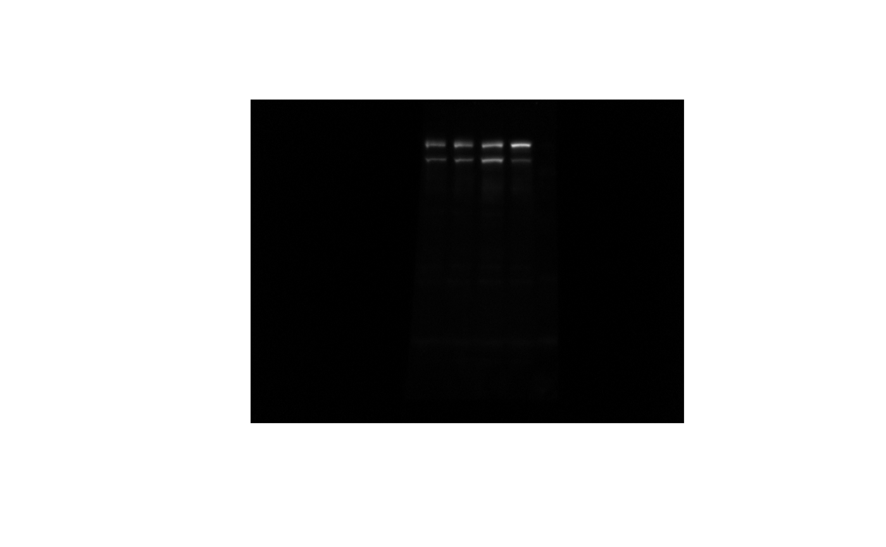
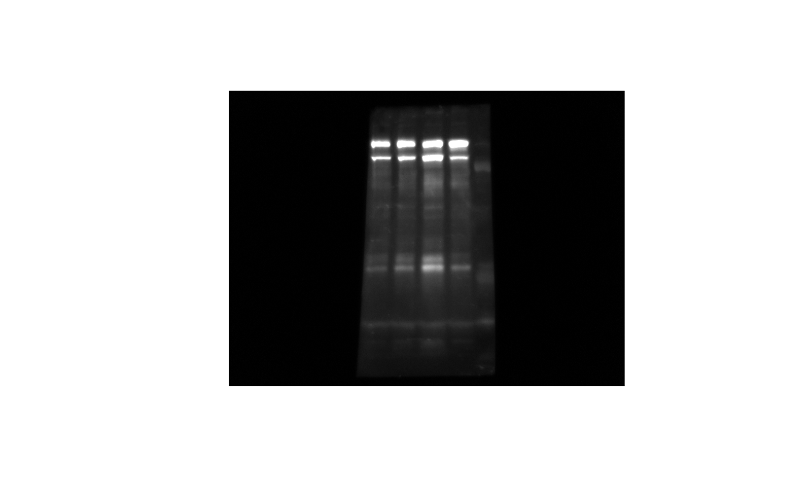
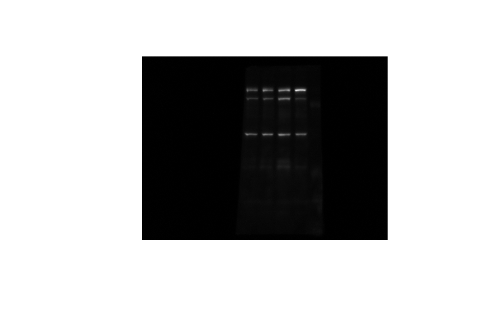
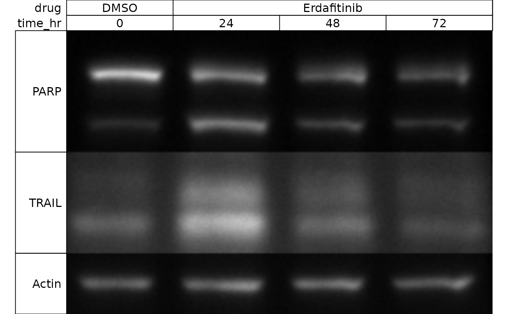
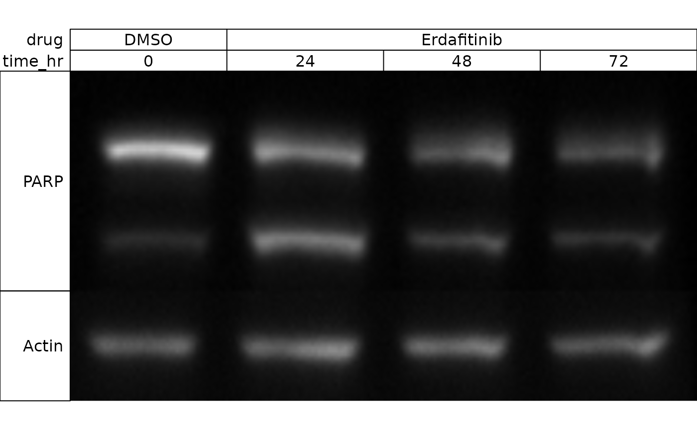
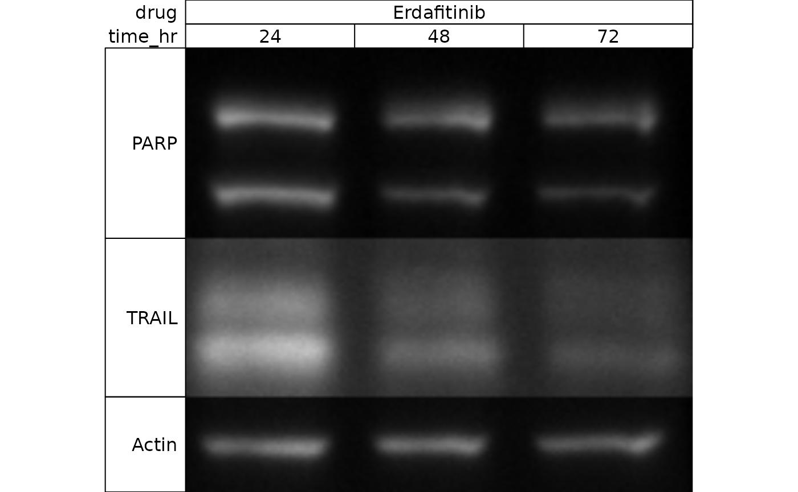

usage
usage.RmdIntroduction
When preparing western blots for presentation, typical workflows at one point usually involve cropping the blots in something like PhotoShop, GIMP, FIJI, etc. Because this manipulation was done in a separate program, usually the best we can do in terms of reproducibility is by providing the original, unmodified images along with the cropped version.
This is fine - it certainly is convenient and I don’t blame anyone
for doing it (particularly busy scientists). There are methods for
declaratively doing image manipulations in R (particularly
magick and EBImage), but they aren’t nearly as
convenient as the real-time visual feedback of typical photo-editing
software - the guess-then-render-repeat loop of trying to find the
perfect cropping geometry for an image without this visual
feedback is tedious at best, and a hard-sell if you’re trying to get
others to join the reproducibility movement.
blotbench attempts to solve this by providing a
Shiny app within the package to perform rudimentary image
manipulations with visual feedback. This app outputs code that should be
written to create these transformations (rather than the image itself)
so the declarative and reproducible benefits of a script can be reaped
while still leveraging the convenience of a graphical interface.
In addition, blotbench introduces a new object (a
wb object) that can store row and column annotation much
like a SummarizedExperiment. This provides additional
benefits such as intuitive indexing (to allow you to treat a blot image
almost like a data.frame) and automatic annotation.
Creating a wb object
A wb object is composed of 4 components:
- imgs: A vector of
image-magickimages - col_annot: A
data.framecontaining lane annotation, one line for each column, with the top row referring to the left-most lane - row_annot: A
data.framecontaining names of the protein blotted for in each image. - transforms: A
data.framecontaining information detailing what transformations should be performed on the image for presentation.
When creating a wb object, you typically will not
specify the transforms at the outset, and both col_annot
and row_annot are optional. At bare minimum, you need to
supply a vector of image-magick images. To show you the
full power of blotbench though, I’m going to supply
arguments 1-3.
First, let’s introduce our images.
Our experiment was a timecourse of cells exposed to a drug (erdafitinib - an FGFR inhibitor). We blotted for three proteins - TRAIL, PARP, and Actin.
Here is our PARP blot:
library(magick)
#> Linking to ImageMagick 6.9.11.60
#> Enabled features: fontconfig, freetype, fftw, heic, lcms, pango, webp, x11
#> Disabled features: cairo, ghostscript, raw, rsvg
#> Using 4 threads
parp <- image_read(system.file("extdata", "parp.tif", package = "blotbench"))
plot(parp)
After blotting for PARP, we probed the same blot again for TRAIL:
trail <- image_read(system.file("extdata", "trail.tif", package = "blotbench"))
plot(trail)
And finally for Actin:
actin <- image_read(system.file("extdata", "actin.tif", package = "blotbench"))
plot(actin)
We’re also going to create column and row annotations while we’re at it.
Column annotations are probably the most involved, so we’ll start with them.
To make the column annotation, create a data.frame that
has one row per lane in the blot. The columns should represent
experimental conditions. The order of the rows should be the order of
the columns after image manipulation. This is
important, as these images are mirrored - we’ll flip them the right way
once we get on to image manipulation.
ca <- data.frame(
drug = c("DMSO", "Erdafitinib", "Erdafitinib", "Erdafitinib"),
time_hr = c(0, 24, 48, 72)
)Row annotation can be supplied as a data.frame with just
one column - name - or, much more simply, as a character
vector, which is what we’ll do here. The order should match the order of
images.
With that, we have everything we need:
Editing blots
Now that we have a blot object, we can call
wb_visual_edit on it to help us generate code to transform
out blots:
wb_visual_edit(wb)After editing your individual blots and clicking “done”, the app will quit and the code to write the transformations will appear in your console:
Paste in your script to crop the images as seen in the app:
transforms(wb) <- tibble::tribble(
~width, ~height, ~xpos, ~ypos, ~rotate, ~flip,
190L, 60L, 269, 51, -0.5, TRUE,
190L, 50L, 238, 276, 0, TRUE,
190L, 30L, 283, 206, 0, TRUE
)Doing so, we get:
transforms(wb) <- tibble::tribble(
~width, ~height, ~xpos, ~ypos, ~rotate, ~flip,
190L, 60L, 269, 51, -0.5, TRUE,
190L, 50L, 238, 276, 0, TRUE,
190L, 30L, 283, 206, 0, TRUE
)
wb
#> $imgs
#> # A tibble: 3 × 7
#> format width height colorspace matte filesize density
#> <chr> <int> <int> <chr> <lgl> <int> <chr>
#> 1 TIFF 696 520 Gray FALSE 728306 83x83
#> 2 TIFF 696 520 Gray FALSE 728306 83x83
#> 3 TIFF 696 520 Gray FALSE 728306 83x83
#>
#> $col_annot
#> drug time_hr
#> 1 DMSO 0
#> 2 Erdafitinib 24
#> 3 Erdafitinib 48
#> 4 Erdafitinib 72
#>
#> $row_annot
#> name
#> 1 PARP
#> 2 TRAIL
#> 3 Actin
#>
#> $transforms
#> # A tibble: 3 × 6
#> width height xpos ypos rotate flip
#> <int> <int> <dbl> <dbl> <dbl> <lgl>
#> 1 190 60 269 51 -0.5 TRUE
#> 2 190 50 238 276 0 TRUE
#> 3 190 30 283 206 0 TRUE
#>
#> attr(,"class")
#> [1] "wb"Note that the transforms have not been applied: the
imgs are still the width and height that they were before
updating the transformations. This allows you to re-edit the blots if
you so desire. The transformations can manually be applied using
apply_transforms, but they are also automatically applied
upon present_wb:
wb_present(wb)
You’ll note that our annotations have automatically been applied - isn’t that nice!
If you want to exclude certain proteins, you can index by row just
like a data.frame:
wb_present(wb[-2,])
You can additionally select lanes as though they were columns:
wb_present(wb[, 2:4])
In practice, this will allow you to do some pretty un-recommended things - but by providing the code, at least it’s auditable.